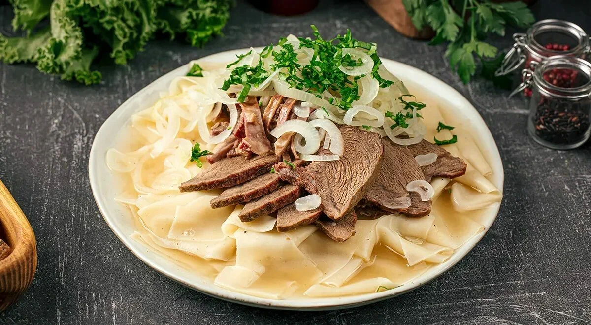

Апорт
Қала символы — ірі, хош иісті алма. Базарларда күзде ерекше сұранысқа ие.
Мәдениет
Алматы — театрлар, музейлер мен галереялардың қаласы. Мұнда ұлттық дәстүр заманауи өнермен қатар өмір сүреді.

Тұрғындардың демалысы көбіне таумен байланысты: серуен, шаңғы, велосипед.

Дәм
Қала символы — ірі, хош иісті алма. Базарларда күзде ерекше сұранысқа ие.

Қазақ дастарқанының бас тағамы — қамыр мен ет қосылған дәстүрлі ас.
Кез келген қонақжай үйдің дастарқаны қою шай мен бауырсақтан басталады.